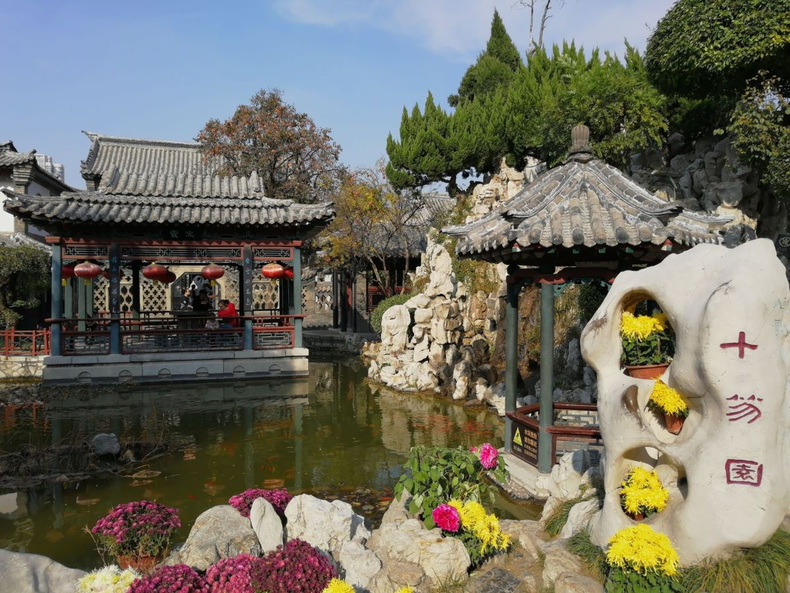
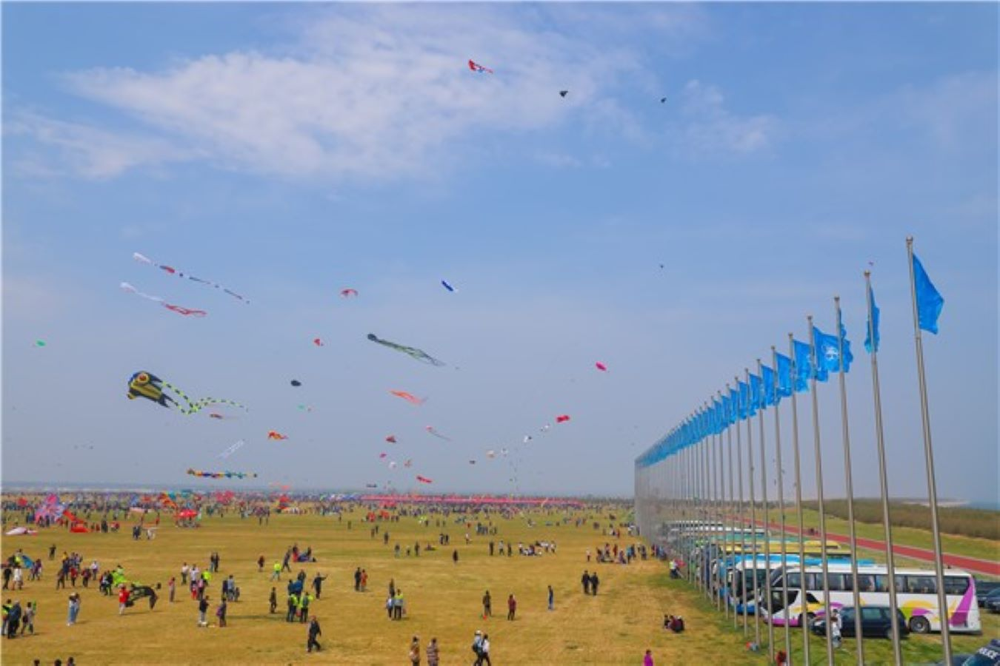
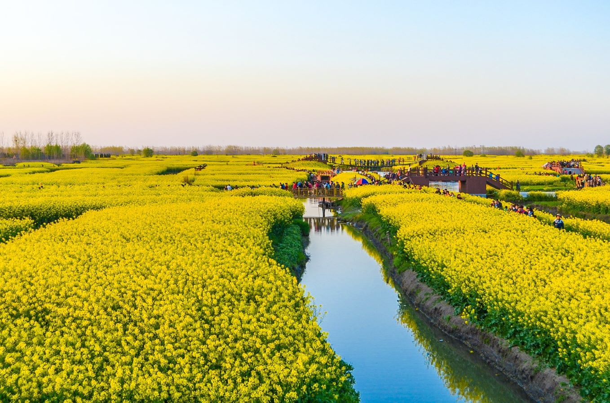

万物复苏的潍坊之春
春天是潍坊最美的季节之一，万物复苏，百花盛开，特别是风筝节期间，整个城市洋溢着欢乐的气氛。

十笏园春色
十笏园两岸柳树抽新芽，河水清澈，是市民休闲散步的好去处。

国际风筝节
每年四月举办的潍坊国际风筝节，吸引世界各地的风筝爱好者。

人民公园樱花
潍坊人民公园的樱花盛开，粉白相间，美不胜收。

郊外油菜花田
潍坊郊外大片的油菜花田，金黄一片，吸引众多游客拍照。
春季推荐活动
赏花踏青
推荐地点: 人民公园、植物园、白浪河湿地公园
最佳时间: 3月下旬至4月中旬
参加风筝节
活动内容: 风筝放飞、风筝制作体验、风筝比赛
时间: 每年4月20日左右
骑行郊游
推荐路线: 市区至浮烟山、市区至白浪河源头
距离: 10-30公里不等
摄影采风
最佳地点: 杨家埠民俗村、十笏园文化街区
特色: 传统建筑与春花相映成趣
春季天气指南
三月
平均温度: 5°C - 15°C
穿衣建议: 毛衣+外套
特点: 气温回升，偶有倒春寒
四月
平均温度: 12°C - 22°C
穿衣建议: 单衣+薄外套
特点: 温暖舒适，偶有风沙
五月
平均温度: 18°C - 28°C
穿衣建议: 短袖+防晒衣
特点: 阳光充足，开始变热